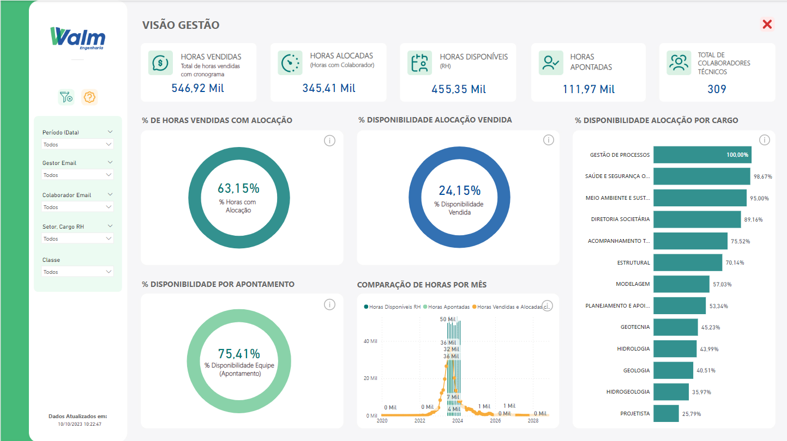
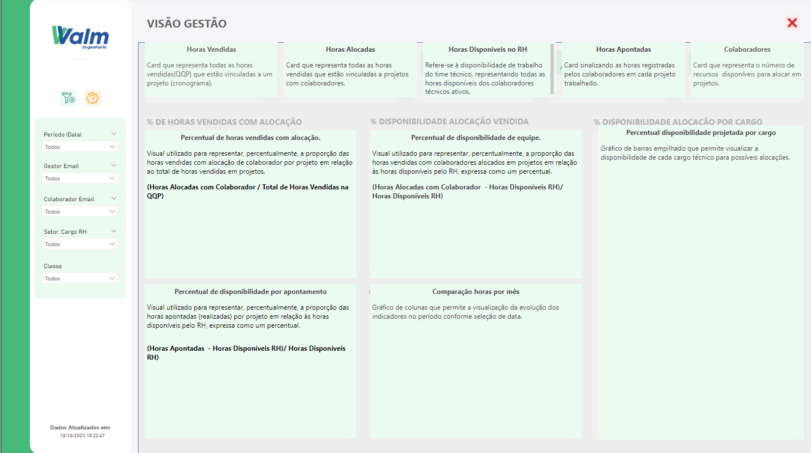
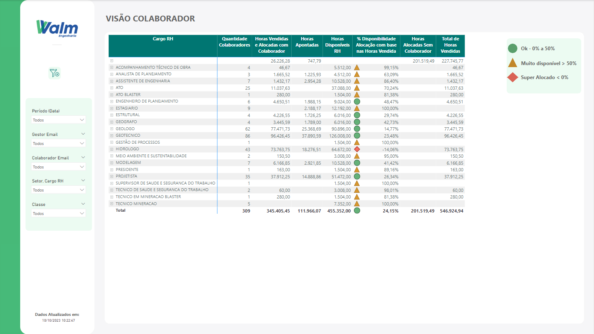
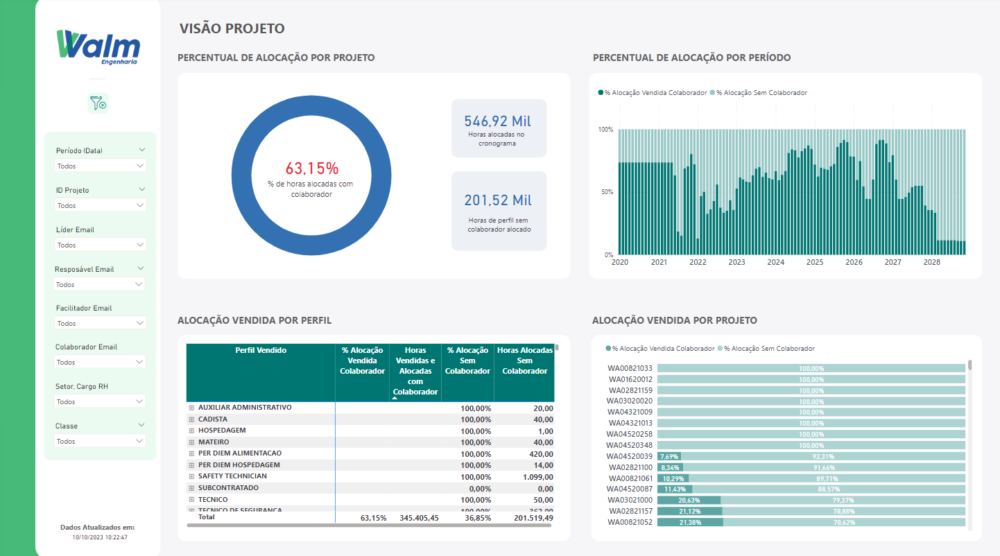
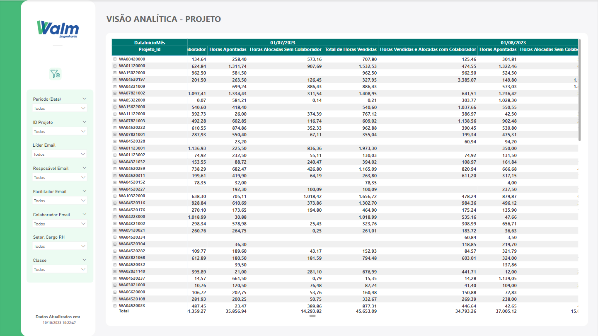
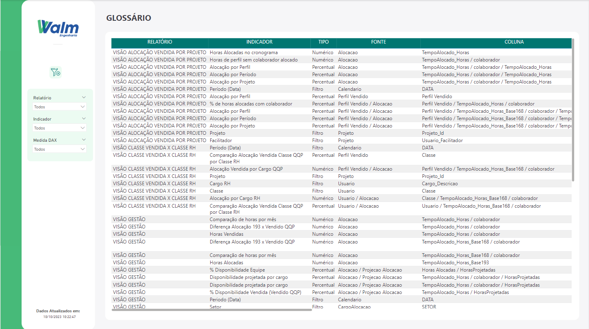

Bem vindo(a)
Neste arquivo, é mantida a documentação do projeto Dashboard Alocação, desenvolvido em parceria entre a A3Data e a Walm Engenharia.
A sua esquerda se encontra o menu das atividades desenvolvidas, como dashboards, explicações sobre arquitetura utilizada, tecnologias, entre outros itens fundamentais para o sucesso do projeto.
Nesta documentação iremos apresentar:
- Glossário
- Definições
- Consumo de dados
- Dashboards desenvolvidos
Entre em contato 📫
Em caso de dúvidas sobre a documentação, termos técnicos, ambiguidades, grafias incorretas ou quaisquer problemas com este documento, por favor, entre em contato via e-mail eduardo.magalhaes@walmengenharia.com.br
Glossário
-
Alocação: Atribuição de mão de obra a tarefas ou finalidades específicas dentro do projeto/obra de engenharia para garantir que os recursos sejam usados de forma eficiente a fim de atender os objetivos e necessidades da organização dentro do projeto em execução.
-
BI: Business Intelligence, conjunto de metodologias, processos e fluxos que junto da tecnologia faz com que os dados e informações resultem em estratégias para otimizar empresas e negócios.
-
Classe: É a categorização de um funcionário dentro de uma organização dentro de uma determinada posição. Existem, basicamente, (inserir qtde) classes de senioridade a serem consideradas no contexto do projeto elaborado: Júnior, Pleno, Sênior e Master. Outras classes, em paralelo, também foram consideradas para categorizar perfis de colaboradores que estão em treinamento ou desenvolvimento profissional dentro da empresa, como Estagiários e Trainees.
-
Dashboard: É um tipo de interface gráfica de usuário que geralmente fornece visualizações rápidas dos principais indicadores de desempenho relevantes para um determinado objetivo ou processo de negócios.
-
QQP: Refere-se ao Quadro de Quantidade de Preços, usado em engenharia e construção, para descrever um detalhamento de itens, quantidade de preços associados a um projeto de construção. É uma parte fundamental do processo de orçamento e estimativa de custos.
-
TT: Se refere a um período total de um ano, começando no início do ano (em janeiro) e terminando em dezembro.
-
Year to date (YTD): Se refere a um período que começa no início do ano (em janeiro) e termina na data em que um relatório financeiro ou contábil é finalizado, como se fosse a expressão “do começo do ano até hoje” ou “acumulado do ano”.
Definições
Partes envolvidas
-
Walm Engenharia A WALM BH Engenharia é uma empresa de reconhecido destaque no mercado, atuando nas áreas de Engenharia Geotécnica, Hidrologia, Hidráulica e Geologia. Atualmente, atende segmentos estratégicos e econômicos, como os de Mineração, Manufatura, Infraestrutura, Energia, Óleo e Gás, e Saneamento. A WALM possui uma equipe técnica multidisciplinar, formada por engenheiros civis, geólogos, geógrafos, engenheiros ambientais, projetistas e desenhistas, amplamente capacitada, qualificada, com experiência prática e formação acadêmica adquiridas no Brasil e no exterior. No seu quadro técnico a empresa conta com especialistas, mestres e doutores e profissional com certificação QP/CP (Qualified Person/Competent Person) em Geotecnia pelo AusIMM – Australasian Institute of Mining and Metallurgy, para atendimento às normas JORC e NI 43-101.
-
A3 Data A A3Data é uma empresa especializada em projetos de Transformação Digital, Analytics e Inteligência Artificial, podendo contribuir de forma muito estratégica para os objetivos de seus parceiros.
Equipe do Projeto
| Função | Nome |
|---|---|
| Sponsor | André Simão (Walm) |
| Product Owner (PO) | Pollyani Cristina de Oliveira e João Marcelo (Walm) |
| Analistas De Dados | Samuel Vilela e Jackson Nascimento (A3Data) |
| Líder De Projeto | Ana Luísa Dos Santos Alves (A3Data) |
| CSM | Flávia Almeida (A3Data) |
Software escolhido
O software escolhido para o desenvolvimento dos dashboards de interesse foi o Power BI. O Power BI é uma plataforma de business intelligence (BI) desenvolvida pela Microsoft que permite aos usuários visualizar, analisar e compartilhar dados de forma interativa. Ele é uma ferramenta poderosa para transformar dados brutos em informações úteis, painéis de controle interativos e relatórios visuais. O Power BI é amplamente utilizado em organizações para análises de dados, geração de relatórios, monitoramento de desempenho e tomada de decisões baseadas em dados. Ele é adequado para uma ampla gama de setores e pode ser usado por analistas de dados, profissionais de negócios e tomadores de decisão. É uma ferramenta versátil que pode transformar dados em insights acionáveis.
Consumo de dados
Dashboards
1. Visão Gestão
O painel de Gestão oferece uma análise abrangente e visual do planejamento e controle de horas vendidas, alocadas e disponibilizadas por cargo para que se tenha um monitoramento e controle contínuo do progresso dos projetos em relação ao cronograma elaborado para realização das atividades. Além desse objetivo central, o painel tem como objetivo secundário fazer o acompanhamento da distribuição de horas alocadas em cada projeto, o quantitativo apontado pelos colaboradores envolvidos, valor percentual de disponibilidade de cada equipe e o comparativo de horas vendidas e alocadas em determinado intervalo de tempo. Representação Visual
A Figura (inserir número) mostra o layout do painel de Visão de Gestão.

Ele utiliza gráficos e métricas para apresentar as seguintes informações:
- Horas Vendidas - representa todas as horas vendidas(QQP) que estão vinculadas a um projeto (cronograma).
- Horas Alocadas - representa todas as horas vendidas que estão vinculadas a projetos com colaboradores.
- Horas Disponíveis - disponibilidade de trabalho do time técnico, representando todas as horas disponíveis dos colaboradores técnicos ativos.
- Horas Apontadas - horas registradas pelos colaboradores em cada projeto trabalhado.
- Total de Colaboradores - número de recursos disponíveis para alocar em projetos.
- Percentual de horas vendidas com alocação - representa, percentualmente, a proporção das horas vendidas com alocação de colaborador por projeto em relação ao total de horas vendidas em projetos.
- Percentual de disponibilidade de alocação vendida - representa, percentualmente, a proporção das horas vendidas com colaboradores alocados em projetos em relação às horas disponíveis pelo RH, expressa como um percentual.
- Percentual de disponibilidade de alocação por cargo - permite visualizar a disponibilidade de cada cargo técnico para possíveis alocações.
- Percentual de disponibilidade por apontamento - representa, percentualmente, a proporção das horas apontadas (realizadas) por projeto em relação às horas disponíveis pelo RH, expressa como um percentual.
- Comparação de horas por mês - permite a visualização da evolução dos indicadores no período conforme seleção de data.
Filtros interativos
Para uma análise mais personalizada, oferecemos filtros interativos que permitem aos usuários selecionar um período específico e características do colaborador envolvido no projeto. Isso permite explorar os dados em detalhes e responder a perguntas específicas. Estão dentro das possibilidades de filtro as seguintes informações:
- Período (Data)
- Gestor do projeto
- Colaborador
- Setor de atuação
- Classe de senioridade
Funcionalidades extras
Além dos gráficos e métricas para análises assertivas em relação aos projetos em execução, o painel de Gestão possui duas funcionalidades extras:
- Filtro de Limpeza Geral - Botão que permite a limpeza de todos os filtros escolhidos ao longo da análise feita pelo usuário
- Painel de Ajuda - A tela auxiliar de ajuda, mostrada na Figura (inserir número), permite que o usuário verifique algumas definições importantes a respeito dos gráficos e métricas calculados, assim como as variáveis utilizadas nos cálculos realizados.

Figura (inserir número) - Tela auxiliar de ajuda
2. Visão Colaborador
O painel do Colaborador oferece uma análise mais específica sobre o status de alocação do colaborador por cargo exercido. O principal objetivo dessa visão é possibilitar a verificação de disponibilidade de horas de um colaborador com base nas horas vendidas em determinado projeto que ele atua. Além desse objetivo central, o painel tem como objetivos secundários verificar a quantidade de colaboradores envolvidos no projeto filtrado, valor de horas apontadas e disponíveis no RH, quantitativo de horas alocadas no projeto que estão sem colaborador e o total de horas vendidas.
Representação Visual
A Figura (inserir número) mostra o layout do painel de visão do colaborador. 
O painel possui, como informação principal, uma tabela que oferece uma visão granular (a nível de senioridade por cargo disponível no RH ) das informações, permitindo que seja explorado os números em detalhes por cada colaborador, como a quantidade de colaboradores por senioridade, o valor de horas que foram vendidas e alocadas no projeto, a quantidade de horas que foram apontadas até a última data de atualização do Project Union, quantidade de horas que foram alocadas no projeto e estão sem colaborador e o total de horas que foram vendidas.
Indicadores
O Percentual de disponibilidade de Alocação com Base nas Horas que foram vendidas em cada projeto é um indicador sinalizado no painel como um farol de sinalização. Para a elaboração desse farol, as seguintes regras de negócio foram consideradas: Para percentual de disponibilidade inferior a 0%, sinalizar farol em cor vermelha, representando uma super alocação; Para percentual de disponibilidade superior a 50%, sinalizar farol em cor amarela, representando uma alta disponibilidade; *Para percentual de disponibilidade entre 0% e 50 %, sinalizar farol em cor verde, representando o cenário ideal de alocação.
Filtros interativos
Para uma análise mais personalizada, oferecemos filtros interativos que permitem aos usuários selecionar um período específico e características do colaborador envolvido no projeto. Isso permite explorar os dados em detalhes e responder a perguntas específicas. Estão dentro das possibilidades de filtro as seguintes informações:
- Período (Data)
- Gestor do projeto
- Colaborador
- Setor de atuação
- Classe de senioridade
3. Visão Projeto
A visão de Projeto oferece uma análise mais detalhada sobre índices e características do projeto. O principal objetivo dessa visão é permitir a visualização do percentual de alocação em cada projeto. Além disso, é possível analisar quais colaboradores estão envolvidos no projeto, quanto da alocação vendida de cada colaborador já foi consumida e o quantitativo de horas que foram alocadas no projeto, porém estão sem alocação.
Representação Visual
A Figura (inserir número) mostra o layout do painel de visão por projeto. 
Ele utiliza gráficos e métricas para apresentar as seguintes informações:
- Percentual de Alocação por projeto - informa o percentual de horas que foram vendidas no projeto e estão alocadas com colaborador
- Percentual de Alocação por período - gráfico que informa, em uma faixa de tempo pré-selecionada, o percentual de alocação das horas que foram vendidas no projeto com colaborador e o percentual que está pendente de colaborador para preenchimento de alocação.
- Alocação Vendida por perfil - tabela que informa, de forma granular, a divisão dos perfis alocados e vendidos por projeto, mostrando por nível de senioridade de colaboradores alocados, o percentual de alocação vendida por colaborador, quanto do perfil está alocado com colaborador e quanto, percentualmente, está alocado sem colaborador.
- Alocação Vendida por projeto - gráfico que informa o percentual atual, por projeto, de alocação vendida com colaborador e o percentual com alocação pendente.
- Horas Alocadas no cronograma - Quantitativo de horas do projeto que estão alocadas no cronograma.
- Horas de perfil sem colaborador alocado - Quantitativo de horas que foram vendidas no projeto, mas que estão sem colaborador alocado.
Filtros interativos
Para uma análise mais personalizada, oferecemos filtros interativos que permitem aos usuários selecionar um período específico e características do colaborador envolvido no projeto. Isso permite explorar os dados em detalhes e responder a perguntas específicas. Estão dentro das possibilidades de filtro as seguintes informações:
- Período (Data)
- Número do projeto
- Líder do projeto
- Facilitador
- Colaborador
- Setor de atuação
- Classe de senioridade
4. Visão Analítica por Projeto
A visão Analítica por Projeto oferece uma análise mais detalhada sobre os projetos em andamento da empresa, em uma determinada faixa de tempo. Isso possibilita que o usuário possa analisar em determinado período de tempo algumas informações relevantes do projeto que atua ou lidera, com relação às horas apontadas, vendidas e alocadas. Representação Visual
A Figura (inserir número) mostra o layout do painel de visão por projeto. 
O painel possui, como informação principal, uma tabela que oferece uma visão granular (a nível de senioridade por cargo disponível no RH ) das informações de horas de cada projeto, permitindo que seja explorado os números em detalhes, por cada colaborador, de horas vendidas, apontadas e alocadas. A cada nível da tabela, é possível analisar em cada projeto a quantidade de horas vendidas, alocadas com colaborador e apontadas para cada setor, classe de senioridade e colaborador em específico.
Filtros interativos
Para uma análise mais personalizada, oferecemos filtros interativos que permitem aos usuários selecionar um período específico e características do projeto. Isso permite explorar os dados em detalhes e responder a perguntas específicas. Estão dentro das possibilidades de filtro as seguintes informações:
- Período (Data)
- Número do projeto
- Líder do projeto
- Facilitador
- Colaborador
- Setor de atuação
- Classe de senioridade
5. Classe Vendida x Classe RH
A visão Classe Vendida x Classe RH oferece uma análise comparativa entre o quantitativo de alocação de horas vendidas por cargo determinado na QQP e a alocação de cargo correspondente no RH. Além disso, é possível observar, percentualmente, a quantidade de alocação de cada classe de senioridade por projeto. Representação Visual
A Figura (inserir número) mostra o layout do painel de visão por projeto.

Ele utiliza gráficos e métricas para apresentar as seguintes informações:
- Alocação vendida por cargo QQP - informa a quantidade de horas vendidas por cada cargo na QQP
- Alocação por cargo RH - informa a quantidade de horas disponíveis por cada cargo no RH
- Comparação Alocação Vendida Classe QQP por Classe RH - informa um comparativo percentual entre a quantidade de horas vendidas na QQP e disponíveis no RH para cada senioridade de cada cargo disponível.
Filtros interativos
Para uma análise mais personalizada, oferecemos filtros interativos que permitem aos usuários selecionar um período específico e características do projeto. Isso permite explorar os dados em detalhes e responder a perguntas específicas. Estão dentro das possibilidades de filtro as seguintes informações:
- Período (Data)
- Número do projeto
- Cargo disponível no RH
- Classe de senioridade
6. Glossário
O Painel de glossário, mostrado na Figura (inserir número correto, é uma visão tabelar que permite auxiliar o usuário com a denominação de alguns campos do dashboard de alocação como um todo. Nele é possível entender qual o tipo de indicador foi criado, a tipagem do valor encontrado, a fonte utilizada para realização do cálculo e as colunas das tabelas de dados utilizadas para criação das medidas.

É importante ressaltar que todas essas informações foram disponibilizadas de forma filtrada por painel. Assim, o processo de filtragem para entendimento das medidas calculadas se tornaria mais otimizado.
Link para acesso
Para explorar este dashboard e obter insights detalhados sobre a alocação, use o seguinte link: Power BI - Dashboard Alocação
O acesso do dashboard, inicialmente, estará disponível apenas para os planejadores devido a disponibilidade de licença na plataforma.